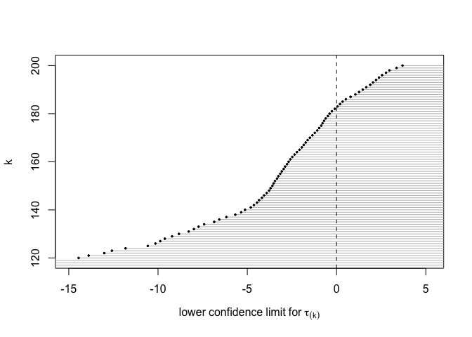

This is an R package for conducting randomization inference for quantiles of individual treatment effects
explanation for the main functions
?pval_bound # get the p value for testing bounded null
?ci_bound # get the confidence interval for the maximum (or minimum) individual effect
?pval_quantile # get the p value for testing null hypotheses on quantiles of individual effects
?ci_quantile # get the confidence interval for quantiles of individual effects
?calc_power # conduct simulation to compare tests using different Stephenson rank sum statistics
?summary_power_results # summarize the simulation to compare performance of different Stephenson rank sum statisticsA simple example
choose the test statistic
method.list = list( name = "Stephenson", s = 10 )test the null hypothesis that the 95% quantile of individual effect is less than or equal to 0
pval = pval_quantile(Z, Y, k = ceiling(n*0.95), c = 0, alternative = "greater", method.list = method.list, nperm = 10^4 )
pval
#> [1] 0construct simultaneous confidence intervals for all quantiles of individual effects
ci = ci_quantile( Z = Z, Y = Y, alternative = "two.sided", method.list = method.list, nperm = 10^4, alpha = 0.05 )
ci
#> CI quantile on 200 units with 100 treated:
#> Method: Stephenson-10
#> Alternative: two.sided with alpha=0.05
#> Quantiles covered from 1 to 200 (200 quantiles)
#> 10000 permutations with tolerance of 0.001visualize the simultaneous confidence intervals for all quantiles of individual effects
ci.limit = ci$lower
plot( NA, ylab="k", xlab=expression("lower"~"confidence"~"limit"~"for" ~tau[(k)]),
ylim=c( n+1-sum(is.finite(ci.limit)), n ) + c(-1, 1),
xlim=range( ci.limit[ci.limit>-Inf] ) + c(-0.5, 1.5) )
for(k in 1:length(ci.limit)){
lines( c( max( ci.limit[k], min(ci.limit[ci.limit>-Inf]) - 100 ), max(ci.limit)+10),
rep(k,2), col = "grey" )
}
points( ci.limit, c(1:n), pch = 20, cex = 0.5 )
abline(v = 0, lty = 2)